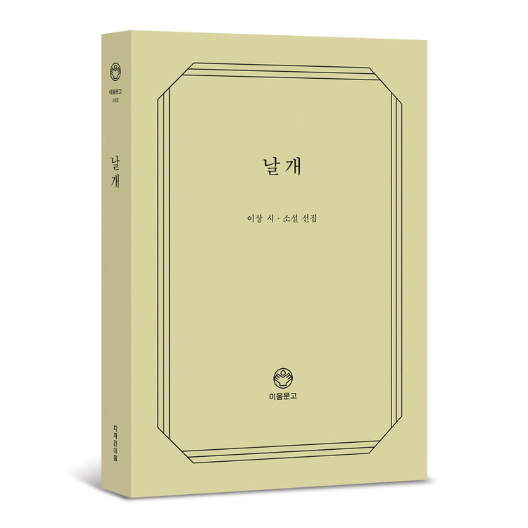
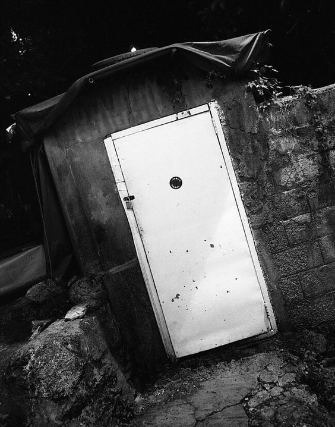

오감도1934年
#추상적 #난해
(烏瞰圖) 제 一호
十三人의兒孩가道路로疾走하오.
(길은막달은골목이適當하오.)
第一의兒孩가무섭다고그리오.
(중략)
十三人의兒孩는무서운兒孩와무서워하는兒孩와그러케뿐이모혓소.
(다른事情은업는것이차라리나앗소)
그中一人의兒孩가무서운兒孩라도좃소
그中二人의兒孩가무서운兒孩라도좃소
그中二人의兒孩가무서워하는兒孩라도좃소
그中一人의兒孩가무서워하는兒孩라도좃소
(길은뚤닌골목이라도適當하오.)
十三人의兒孩가道路로疾走하지아니하야도좃소.
이런시1980年
#사랑시 #슬픈시
이런시
역사(役事)를하노라고 땅을파다가
커다란돌을하나 끄집어 내어놓고보니
(중략)
어떤돌이와서 그돌을업어갔을까
나는참이런처량(悽凉)한생각에서
아래와같은작문(作文)을지었다
「내가 그다지 사랑하던 그대여
내한평생(平生)에
차마 그대를 잊을수없소이다.
내차례에 못올사랑인줄은 알면서도
나혼자는 꾸준히생각하리라.
자그러면 내내어여쁘소서」
어떤돌이 내얼굴을
물끄러미 치어다보는것만같아서
이런시(詩)는그만찢어버리고싶더라
거울1933年
#감각적 #모던
거울
거울속에는소리가없오
저렇게까지조용한세상은참없을것이오
거울속에도내게귀가있오
내말을못알아듣는딱한귀가두개나있오
거울속의나는왼손잡이요
내악수(握手)를받을줄모르는―
악수(握手)를모르는왼손잽이요
(중략)
나는지금(至今)거울을안가졌오마는
거울속에는늘거울속의내가있오
잘은모르지만외로된
사업(事業)에골몰할께요
거울속의나는참나와는
반대(反對)요마는또꽤닮았오
나는거울속의나를근심하고
진찰(診察)할수없으니퍽섭섭하오
진 단 0 : 11933年
#패러독스 #수학기호 #이공계
진 단 0 : 1
혹은환자의용태에관한문제.
２２２２２２２２２ㆍ１
３３３３３３３３ㆍ２２
４４４４４４４ㆍ３３３
５５５５５５ㆍ４４４４
６６６６６ㆍ５５５５５
７７７７ㆍ６６６６６６
８８８ㆍ７７７７７７７
９９ㆍ８８８８８８８８
０ㆍ９９９９９９９９９
ㆍ００００００００００
26.10.1931
이상 책임의사 이 상
건축무한육면각체1980年
#다다이즘 #자동기술법 #에스컬레이터
(建築無限六面角体)
사각형의내부의사각형의내부의사각형의내부의사각형의내부의사각형 사각이난원운동의사각이난원운동의사각이난원 (중략) 평행사변형대각선방향을추진하는막대한중량 (중략) 만곡된직선을직선으로질주하는낙체공식 시계문자반에Ⅻ에내리워진일개의침수된황혼 명함을짓밟는군용장화.가구를질구하는조화분연 위에서내려오고밑에서올라가고위에서내려오고밑에서올라간사람은 밑에서올라가지아니한위에서내려오지아니한밑에서올라가지아니한위에서내려오지아니한사람 저여자의하반은저남자의상반에흡사하다(나는애련한후에애련하는나) 사각이난케이스가걷기시작이다(소름이끼치는일이다) 라지에터의근방에서승천하는굳바이 바깥은우중.발광어류의군집이동
꽃나무1980年
#자아탐색 #비판적
꽃나무
벌판한복판에 꽃나무하나가있소.
근처(近處)에는꽃나무가하나도없소.
꽃나무는제가생각하는꽃나무를
열심(熱心)으로생각하는것처럼
열심으로꽃을피워가지고섰소.
꽃나무는제가생각하는꽃나무에게갈수없소.
나는막달아났소.
한꽃나무를위(爲)하여 그러는것처럼
나는참그런이상스러운흉내를내었소.

날개
1980年 #무기력한 자아 #주체성
날개
1980年 #무기력한 자아 #주체성
" 날자. 날자. 날자. 한번만 더 날자꾸나 "
조광 9월호에 발표되었던 소설이상의 단편소설.
의식의 흐름 기법을 사용한 것으오 유명하다.
매춘부의 기둥서방으로 사는 남자의 자폐적인 일상과
무기력한 주인공의 모습이 음울하게 그려지고 있다.
이상의 사소설이라고 볼 수도 있지만
심리소설로 분석되는 경향이 보편적이다.

지도의 암실
1932年 #사회비판적 #자아탐색 #주체성
지도의 암실
1932年 #사회비판적 #자아탐색 #주체성
" 活胡同是死胡同 死胡同是活胡同 "
조광 9월호에 발표되었던 소설"사는 것이 어찌하여 이와 같으며, 죽음이 어째서 같은가.
죽음이 어째서 이와 같으며, 사는 것이 같은가 "
불어와 한글, 한문, 일어가 섞인데다가 띄어쓰기를 제대로
하지않는 이상의 특성으로 해석하기 힘든 소설이다.
일제에 반감이 있는 소설이라는 설이 있지만,
일어로 쓰인점이 의문

종생기[終生記]
1937年 #고백체적 #이상의 죽음
" 만26세30개월을 맞이하는 이상 선생님이여!
허수아비여! 자네는 노옹(老翁)일세.
무릎이 귀를 넘는 해골일세. "
조광 5월호에 발표되었던 소설부정(不貞)과 배신을 일삼는 여자를 사랑하는
주인공의 현재의 모습과 어두운 개인사(個人史)가 교차하면서
극히 자학적으로 전개된 일본에서 쓰인 소설
이 소설은 이상 본인이 실체화 되어 나오며
건강악화로 자신의 죽음이 다가올 즈음 집필되었다.